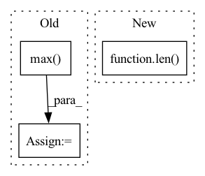

Pattern ID :33397
Before Change
heatmap = cv2.resize(heatmap[0], _input.shape[2:])
heatmap = heatmap - np.min(heatmap)
heatmap = heatmap / np.max( heatmap)
return heatmap
After Change
def grad_cam(self, _input: torch.FloatTensor, _class: List[int]) -> np.ndarray:
if isinstance(_class, int):
_class = [_class] * len( _input)
_class = torch.tensor(_class).to(_input.device)
feats = self._model.get_fm(_input).detach() // (N,C,H,W)
feats.requires_grad_()
_output: torch.FloatTensor = self._model.pool(feats)In pattern: SUPERPATTERN
Frequency: 4
Non-data size: 3
Instances Fragment ID: 96136632
Project Name: ain-soph/trojanzoo
Commit Name: 2bf7c2a2e8acba2592ee17d60d1a59b7bd1bbfe5
Time: 2020-11-24
Author: ain-soph@live.com
File Name: trojanzoo/model/imagemodel.py
M Class Name: ImageModel
N Class Name: ImageModel
M Method Name: grad_cam(3)
N Method Name: grad_cam(3)
M Parent Class: Model
N Parent Class: Model
M File Name: trojanzoo/model/imagemodel.py
N File Name: trojanzoo/model/imagemodel.py
M Start Line: 206
M End Line: 222
N Start Line: 190
N End Line: 212
Before Change
peaks &= torch.gt(main, minus)
signal = signal.clamp(0, percentile(signal[peaks], percent))
signal /= signal.max()
return signal
def compress(signal, threshold, ratio, invert=False):After Change
torch.tensor: Clipped signal
result = []
if len( signal.shape) < 2:
signal = signal.unsqueeze(1)
for sig in signal.unbind(1):
locs = torch.arange(0, sig.shape[0]) Fragment ID: 96136626
Project Name: maua-maua-maua/maua
Commit Name: ec796fb01920c610e5726ce661e16b4a9edec7cd
Time: 2022-01-26
Author: hans@brouwer.work
File Name: maua/audiovisual/audioreactive/postprocess.py
M Class Name: AnonimousClass
N Class Name: AnonimousClass
M Method Name: percentile_clip(2)
N Method Name: percentile_clip(2)
M Parent Class:
N Parent Class:
M File Name: maua/audiovisual/audioreactive/postprocess.py
N File Name: maua/audiovisual/audioreactive/postprocess.py
M Start Line: 43
M End Line: 54
N Start Line: 43
N End Line: 59
Before Change
assert len(locations) > 0
label = slide_data["label"][locations].values
if patient_voting == "max":
label = label.max() // get patient label (MIL convention)
elif patient_voting == "maj":
label = stats.mode(label)[0]
else:After Change
ignore (list): List containing class labels to ignore
self.label_dict = label_dict
self.num_classes = len( set(self.label_dict.values()))
self.seed = seed
self.print_info = print_info
self.patient_strat = patient_strat
self.train_ids, self.val_ids, self.test_ids = (None, None, None) Fragment ID: 96136614
Project Name: mahmoodlab/clam
Commit Name: 7e24b449e80d8cea72bf764341cea9a26b535a96
Time: 2021-03-01
Author: mlu21@jhu.edu
File Name: datasets/dataset_generic.py
M Class Name: Generic_WSI_Classification_Dataset
N Class Name: Generic_WSI_Classification_Dataset
M Method Name: __init__(11)
N Method Name: __init__(10)
M Parent Class: Dataset
N Parent Class: Dataset
M File Name: datasets/dataset_generic.py
N File Name: datasets/dataset_generic.py
M Start Line: 53
M End Line: 89
N Start Line: 39
N End Line: 76
Before Change
_output = self.model(_input.to(env["device"]))[:, target].sum()
// torch.max type: (data, indices), we only need [0]
grad = torch.autograd.grad(_output, _input)[0].max(dim=1, keepdim=True) [0] // (B, 1, H, W)
_input.requires_grad = False
saliency_maps.append(grad.cpu())
return torch.cat(saliency_maps)After Change
saliency_maps = []
for data in loader:
_input, _label = self.model.get_data(data)
saliency_map = self.model.get_saliency_map(_input, [target] * len( _input) )
saliency_maps.append(saliency_map.detach().cpu())
return torch.cat(saliency_maps)
Fragment ID: 96136628
Project Name: ain-soph/trojanzoo
Commit Name: 2bf7c2a2e8acba2592ee17d60d1a59b7bd1bbfe5
Time: 2020-11-24
Author: ain-soph@live.com
File Name: trojanzoo/defense/backdoor/neuron_inspect.py
M Class Name: Neuron_Inspect
N Class Name: Neuron_Inspect
M Method Name: get_saliency_map(3)
N Method Name: get_saliency_map(3)
M Parent Class: Defense_Backdoor
N Parent Class: Defense_Backdoor
M File Name: trojanzoo/defense/backdoor/neuron_inspect.py
N File Name: trojanzoo/defense/backdoor/neuron_inspect.py
M Start Line: 73
M End Line: 80
N Start Line: 73
N End Line: 76